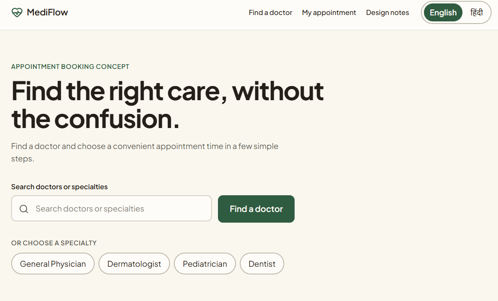

COMPLETED CONCEPT · WORKING PROTOTYPE

MediFlow — Healthcare Appointment Experience
A focused healthcare appointment experience designed to make finding a doctor, choosing a time, and confirming an appointment feel simple and predictable.
Role: UX/UI Designer · Product Thinker · DeveloperTechnology: React · TypeScript · Tailwind CSS · Lovable